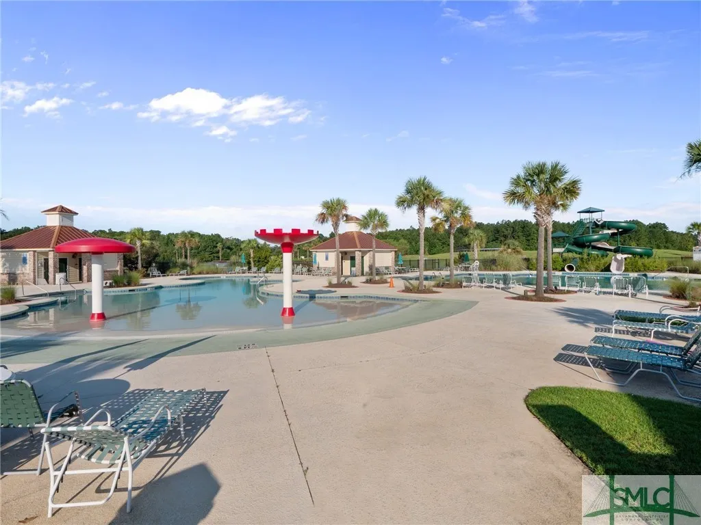

Photo pair 1


geometrically_supported
Shared-image context: SHARED IMAGE: shared-7091 appears in 3 Airbnb listings; possible generic imagery or related hosts, not property-specific evidence
Hash / geometric comparison evidence
{
"hash_hamming": {
"dhash": 1
},
"hash_min": 1,
"priority_policy": "obvious_v2_both_phashes_le_6_realtor_shared_excluded",
"exact_hash_hamming": {
"phash": 4,
"center_phash": 2
},
"orb_ransac": {
"score": 0.785,
"detail": {
"inliers": 785,
"ratio_matches": 785,
"coverage": 0.4195243010328744,
"homography": [
[
0.9998304634667061,
0.00022130833391453456,
0.12471918568718875
],
[
-3.28052906883706e-05,
1.0001542158739578,
0.13782446690621497
],
[
-3.718344341165925e-07,
-3.939150610603108e-08,
1.0
]
]
},
"comparison_ms": 9.757717998581938,
"feature_lookup_or_extraction_ms": 0.0065119966166093946
}
}